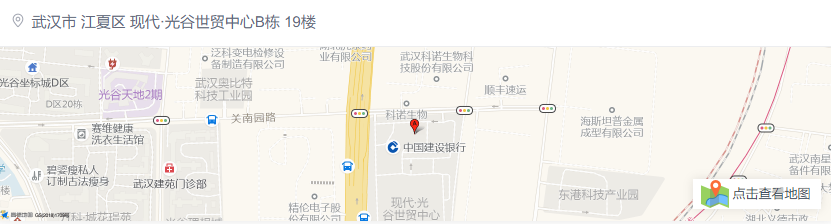

前端程序员 15-30K
职位描述
岗位要求:
- 具有Javascript开发经验，熟练掌握HTML/CSS相关技术；
- 熟练掌握浏览器兼容性、前端安全防范、响应式布局、多终端兼容适配，有实践经验；
- 熟练掌握一个以上前端框架（Vue/React)，对前端开发的前沿技术有深入了解优先
- 对工作认真负责，思路周密，代码严谨；
- 有良好的沟通能力，出色的团队合作精神；
- 对工作富有激情，具有好学和开放的工作态度。
岗位职责:
负责腾讯教育方向产品的前端开发工作。
公司介绍
腾讯以技术丰富互联网用户的生活。
通过通信及社交平台微信和 QQ 促进用户联系，并助其连接数字内容和生活服务 ，尽在弹指间。
通过高效广告平台，协助品牌和市场营销者触达数以亿计的中国消费者。
通过金融科技及企业服务，促进合作伙伴业务发展，助力实现数字化升级。
我们大力投资于人才队伍和推动科技创新，积极参与互联网行业协同发展。
腾讯于 1998 年11月在中国深圳成立，2004 年6月在香港联合交易所主板上市。
工作地址
